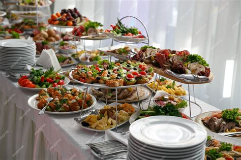

where every dish tells a story and every meal becomes an unforgettable experience. I bring passion, creativity, and precision to every plate. From intimate dinner parties to grand celebrations, I create bespoke culinary experiences that celebrate the art of fine dining.
My culinary journey began in my grandmother’s kitchen in Tuscany, where I learned that food is more than sustenance—it’s love, tradition, and artistry combined. After graduating from the Culinary Institute of America, I honed my skills in Michelin‑starred restaurants across New York, Paris, and San Francisco, working alongside renowned chefs who taught me that perfection lies in the details. My philosophy centers on sourcing the finest seasonal ingredients and treating them with respect and creativity.
Transform your home into a fine dining restaurant with personalized menus crafted specifically for your tastes and dietary requirements. I handle everything from menu planning and shopping to cooking and presentation, allowing you to enjoy restaurant‑quality cuisine in the comfort of your own space.
Transform your event into an unforgettable experience with bespoke menus, seamless service, and exquisite presentation. From intimate gatherings to grand celebrations, I take care of every detail so you can focus on making memories.
Learn hands‑on techniques and insider tips in a fun, interactive setting. Whether you’re a beginner or an experienced home cook, my classes will elevate your skills and ignite your culinary passion.
A harmonious blend of ocean sweetness and earthy richness, this dish showcases perfectly caramelized scallops paired with silky cauliflower purée and crispy pancetta, finished with microgreens and a drizzle of brown butter.
A harmonious blend of ocean sweetness and earthy richness, this dish showcases perfectly caramelized scallops paired with silky cauliflower purée and crispy pancetta, finished with microgreens and a drizzle of brown butter.
A harmonious blend of ocean sweetness and earthy richness, this dish showcases perfectly caramelized scallops paired with silky cauliflower purée and crispy pancetta, finished with microgreens and a drizzle of brown butter.
Worked alongside the head chef to develop seasonal tasting menus, manage a brigade of 8 cooks, and ensure the highest plating standards.
Oversaw all kitchen operations, designed bespoke private-dining experiences, and led a team to earn our first Michelin star.
Recognized by the National Culinary Society for groundbreaking work in modern-fusion cuisine.
Featured as one of the top five rising culinary talents under 35.